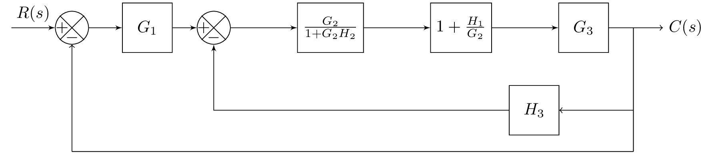

\documentclass{standalone}
\usepackage{blox}
\usepackage{tikz}
\usetikzlibrary{positioning}
\newcommand{\equal}{=}
\usepackage{tikz}
\usetikzlibrary{intersections}
\usepackage{tkz-euclide}
% Radius for arc over intersection
\def\radius{1.mm}
\tikzset{
connect/.style args={(#1) to (#2) over (#3) by #4}{
insert path={
let \p1=($(#1)-(#3)$), \n1={veclen(\x1,\y1)},
\n2={atan2(\y1,\x1)}, \n3={abs(#4)}, \n4={#4>0 ?180:-180} in
(#1) -- ($(#1)!\n1-\n3!(#3)$)
arc (\n2:\n2+\n4:\n3) -- (#2)
}
},
}
\begin{document}
\begin{tikzpicture}
\bXInput{A} % Input
\bXComp{B}{A} % First adder
\bXLink[$R(s)$]{A}{B} % Input Label
\bXBloc[2]{C}{$G_1$}{B} % Block G1
\bXLink{B}{C} % First added -- G1
\bXComp{D}{C} % Second adder
\bXChain[4]{D}%
{G2Feed/$\frac{G_2}{1+G_2H_2}$,H1G2unity/$1+\frac{H_1}{G_2}$,G3/$G_3$}
\bXLink{C}{D}
%\bXLink{E}{G2}
%\bXLink{G2}{adder4} % G2 to adder
%\bXBloc[3]{G3Block}{$G_3$}{adder4} % G3
%\bXBranchy[7.5]{BranEnd}{H3BlockRight} % Right H3 Block
%\bXBranchy[2.5]{H3BlockRight}{BranEndReturn} % Right H3 Block
\bXBranchx[3]{G3}{BranEnd} % branch before output
\bXBranchy[5]{BranEnd}{H3BlockRight} %H3BlockRight
\bXBloc[-7.5]{H3Block}{$H_3$}{H3BlockRight} % H3 Block
\bXBranchy[2.5]{H3BlockRight}{returnToInputRight}
\bXBranchy[7.5]{B}{adder1Down}
\draw[-] (BranEnd.center) -- (H3BlockRight.center);
\draw[->] (H3BlockRight.center) -- (H3Block);
\node[right = 0.5cm of BranEnd] (end) {$C(s)$};
\draw[->] (G3) -- (end);
%H3 to second adder
\bXLinkxy{H3Block}{D}
%Output back to input, feedback loop
\draw[-] (H3BlockRight.center) -- (returnToInputRight.center);
\draw[-] (returnToInputRight.center) -- (adder1Down.center);
\draw[->] (adder1Down.center) -- (B);
%\draw[-] (H3Block) -- (adder3down.center);
%\path[name path=line] (adder3down.center) -- (E);
%\path[name intersections={of=H2 to adder2down and line,by=inter}];
%\draw[->,connect=(adder3down.center) to (E) over (inter) by 3pt ];
%\bXLinkxy{BranEndReturn}{B}
%\bXLinkyx{Bran2}{H2Block}
\end{tikzpicture}
\end{document}Created by David Li